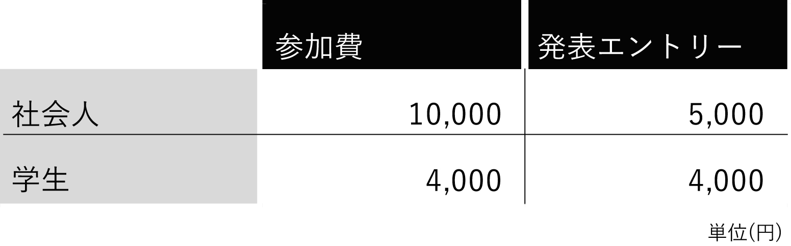

ようこそ、対馬へ！
このたびは「みらいらぼつしま」に関心を寄せていただき、ありがとうございます。参加に際しましては以下の内容をご確認の上、エントリーフォームよりお申し込みください。
イベント概要
〒817-0022 長崎県対馬市厳原町国分1543
対馬までの交通アクセス：「研究会のしおり」もしくは以下のURL参照
http://www.itolab.nitech.ac.jp/SIG-CCI/conf2/traffic.html
参加申し込み
参加費
*参加に加え、発表を希望される場合には別途発表エントリー費用がかかります。
*対馬市内からの参加者は無料（食事代などの実費は頂きます）
*参加費には、フィールドワーク以外の交通費、食事代は含みません。
*2日目、3日目からの参加につきましても同額いただきます。
*対馬へのアクセス、宿泊、持ち物等につきましては「研究会のしおり」をご参照ください。
*未就学児などご家族の参加につきましては事務局にお問い合わせください。
発表エントリー
本研究会では、より多くの対話を生み出すための参加者の皆さんの積極的な話題提供をお願いしています。学術的なバックグラウンドをお持ちでない場合でも発表は可能です。
発表までの流れ
参加申し込みの際に、発表の有無を伺いますので、「発表を希望する」を選択してください。
発表に際してメンターを助言、支援を必要とされる場合には、「発表の概要」にその旨記載ください。
原稿執筆案内: http://www.itolab.nitech.ac.jp/SIG-CCI/submission.html
•A4 1～6ページ程度（最大8ページまで）
•人工知能学会研究会スタイルファイル／Wordテンプレートをご利用ください。
http://www.ai-gakkai.or.jp/sig/sig-style/
・完成原稿はPDFに変換した上で、2017年6月10日（土）までに、下記URLの原稿投稿システムからご投稿下さい。
・原稿作成に際し、補助が必要な方はお知らせください。学生、研究者がメンターとして原稿作成、発表スライド作成を支援いたします。
論文投稿システム：
https://form.jotform.me/70938432366462論文公開形式
発表論文は「人工知能学会AI書庫（アイショコ）」（https://jsai.ixsq.nii.ac.jp/ ）に「オープンアクセス」での掲載となります。 原稿のウェブ公開にあたり特別な配慮が必要な場合（知的財産権など）は、下記問い合わせ先までその旨ご連絡ください。
発表時間
質疑応答を含まず15分（ただし、発表件数によって若干の変動があります）
パネルセッションなどの場合には時間がことなることがあります。
募集テーマ
・地域社会やオンラインコミュニティ等で創発される共創知や集合知の事例
・市民の共創や協働を支援する技術
・市民と研究者・技術者の共創や協働の事例
・より大きな集合知に繋がるような地域横断的な取り組み事例やそのための支援技術
・また、企業等組織内における組織開発、教育、マーケティング、製品開発等の組織における共創知に関する事例も含む
関連キーワード
Sharing Economy、合意形成、市民参画、シビックテック、フリーイノベーション、
オープンイノベーション、クラウドソーシング、シビックテック、オープンデータ、
オープンサイエンス、オープンガバメント、スマートシティ、オンラインコミュニティ、マルチエージェントシステム、社会ネットワーク分析、IoT/M2M、WWW、高齢者介護、社会選択理論、グループ意思決定、地域学、観光学、社会心理学、社会学、経済学、
行動経済学、文化経済学、心理学、倫理・法律、その他の科学・学術等の社会課題応用に関する共創的な事例
※第1回研究会で発表された内容については、下記サイトをご覧ください。
http://www.itolab.nitech.ac.jp/SIG-CCI/confs/sig-cci1.html#talk_dialogue